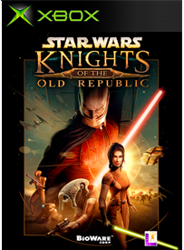

En este videojuego de lego, se nos permite jugar los 6 primeros capitulos de la saga hasta ese entonces, con contenido extra como 6 misiones alternativas, misiones de cazarrecompensas y un personaje extra el cual era indiana Jones.
Lego Star Wars 3: The Clone Wars
En este videojuego de lego, se nos permite jugar las primeras temporadas de la famosa serie: The Clone Wars. Este seria uno de los ultimos videojuegos de lego star wars hasta el 2015.
Lego Star Wars: The Force Awakens
Junto con el regreso de la saga con la película del episodio 7, salio un videojuego de lego basado en esta película, donde se añaden a todo lo relacionado a star wars hasta el momento, con una nueva historia, nuevos personajes, nuevas mecanicas y nuevos dlc, Lego Star Wars: The Force Awakens nos reintroduce a esta saga de juegos.
Lego Star Wars: The Skywalker Saga
En el 2021 llegara la conclusión hasta el momento de la saga de star wars en videojuegos de Lego, este llegaria con Lego Star Wars: The Skywalker Saga, un videojuego donde nos permitira jugar a todos los episodios, spin off y posiblemente series de esta saga, tendra el mayor numero de personajes en un videojuego de Lego y se ve muy prometedor.
Star Wars: Knights of the Old Republic
En este videojuego jugamos como un caballero jedi que es alguien que no recuerda nada de su pasado pero es un prodigio en la fuerza el cual estamos en busca de Darth Malak y su flota la cual tiene como rehen a la maestra jedi Bastila Shan y a la vez va descubriendo sobre el misterioso Darth Revan y su paradero desconocido.

Star Wars: The Force Unleashed
En este fantastico videojuego nos ponemos en la piel de el acolito oscuro de Darth Vader, Starkiller el cual se embarca en una aventura para encontrar a maestros jedi y asesinarlos para complacer a su maestro, pero pronto descubrira que su camino lo lleva a otro destino distinto.
Star Wars: The Force Unleashed 2
Volvemos a jugar como Starkiller pero esta vez es un clon o eso se le hace pensar por Vader y el intentara descubrir el paradero de su amada Juno Eclipse y ademas sobre su verdadera identidad.
Star Wars: Battlefront
Este es un videojuego multijugador donde te permite jugar como imperiales o rebeldes y puedes variar entre soldados o los heroes o villanos vistos en la trilogia original.
Star Wars: Battlefront 2
Aqui regresa el famoso multijugador pero esta vez hay una mayor variacion en cuanto a personajes, podemos jugar como clones, droides de combate, rebeldes, soldados imperiales o los heroes y villanos de las 11 películas de la saga, este ademas contiene un modo historia que sucede 20 años previos a los eventos de El Despertar de la Fuerza.
Star Wars Jedi: Fallen Order
Cal Kestis, antiguo padawan, sobrevivió a la Orden 66, una ley ejecutiva urdida por Palpatine con el objetivo de arrebatar el poder a los jedi. Los clones, hasta entonces soldados leales a la república, lo eran realmente a su amo, Darth Sidious. Por eso, a excepción de unos cuantos disidentes, no dudaron en ejecutar a los que hasta entonces habían sido sus compañeros de armas. Kestis se libró de la muerte, pero se vio obligado a huir para evitar que el imperio le diera caza.